import matplotlib.pyplot as plt
import matplotlib
%matplotlib inline
import numpy as np
import scipy.linalg as la
from rbf import *
from scipy.spatial import cKDTreeInterpolation
matplotlib.rcParams.update({'font.size': 14})rbf_obj = rbf_dict['multiquadric']
rbf = rbf_obj['rbf']a, b = 0, 2
xs = np.linspace(a, b, 1000)
for label in rbf_labels:
print(label)
rbf_obj = rbf_dict[label]
rbf = rbf_obj['rbf']
plt.figure(figsize=(8,4))
plt.plot(xs, rbf(xs, 1), 'r-')
plt.title('$\phi(r) = $' + rbf_obj['tex'])
plt.xlim(a,b)
plt.show()gaussian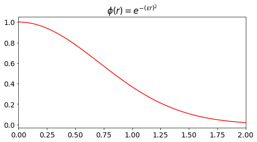
multiquadric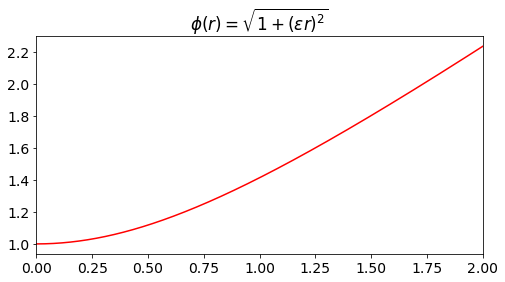
inverse quadratic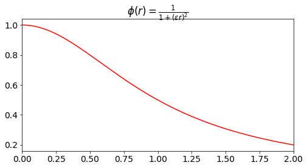
inverse multiquadric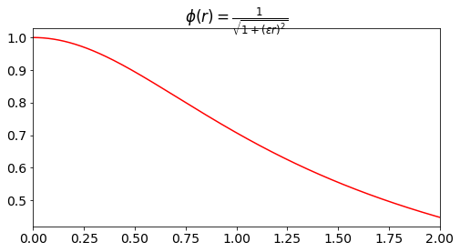
thin plate spline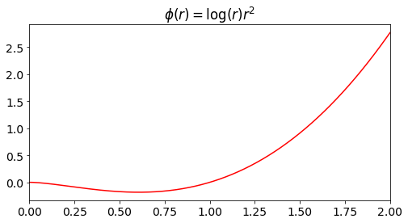
cubic spline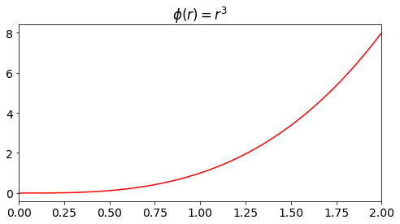
fourth degree PHS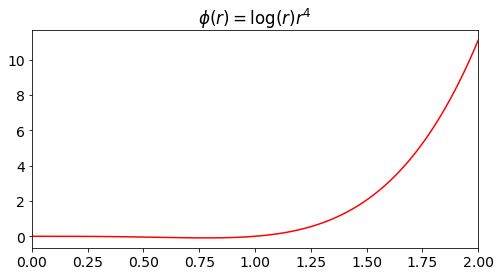
fith degree PHS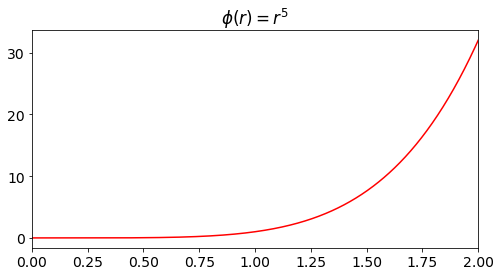
sixth degree PHS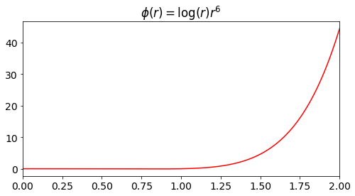
seventh degree PHS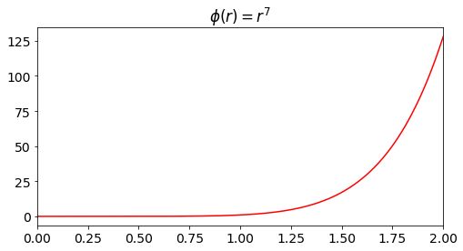
eighth degree PHS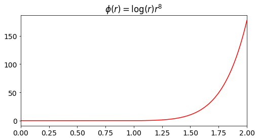
ninth degree PHS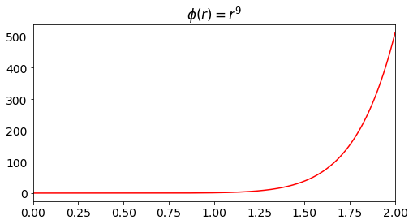
def foo(x):
return np.sin(np.exp(3*x))a, b = -1, 1
xs = np.linspace(a, b, 10**3)
plt.figure(figsize=(12,8))
plt.plot(xs, foo(xs))
plt.show()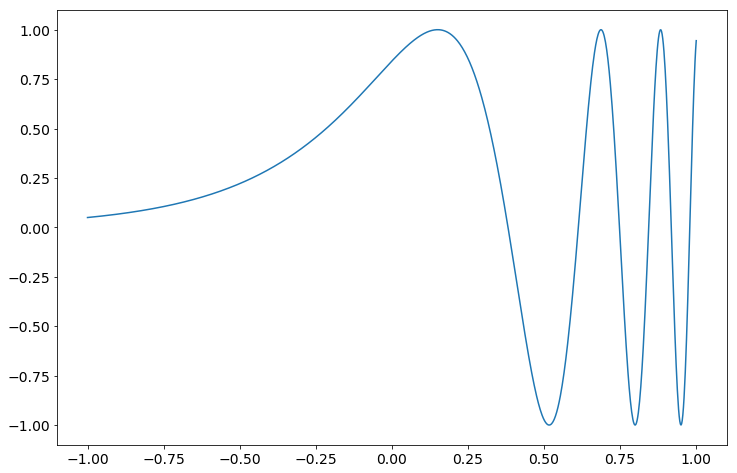
ns = [8*2**i for i in range(7)]
print(ns)
shape_errors = [[] for label in shape_labels]
phs_errors = [[] for label in phs_labels]
for n in ns:
print('calculating for n=%d' % n)
xs = np.linspace(a, b, n)
zs = np.linspace(a, b, n*3)
fs = foo(xs)
u_true = foo(zs)
for i, label in enumerate(shape_labels):
rbf_obj = rbf_dict[label]
rbf = rbf_obj['rbf']
us, *junk = rbf_interp(xs, fs, zs, rbf, optimize_shape=True)
err = la.norm(us-u_true)/la.norm(u_true)
shape_errors[i].append(err)
for i, label in enumerate(phs_labels):
rbf_obj = rbf_dict[label]
rbf = rbf_obj['rbf']
us, *junk = rbf_interp(xs, fs, zs, rbf, optimize_shape=False)
err = la.norm(us-u_true)/la.norm(u_true)
phs_errors[i].append(err)[8, 16, 32, 64, 128, 256, 512]
calculating for n=8
calculating for n=16
calculating for n=32
calculating for n=64
calculating for n=128
calculating for n=256
calculating for n=512plt.figure(figsize=(12,8))
legend = []
for err, label in zip(shape_errors, shape_labels):
plt.loglog(ns, err, 'o--')
legend.append(label)
plt.legend(legend)
plt.xticks(ns, ns)
plt.title('shape RBFs')
plt.show()
plt.figure(figsize=(12,8))
legend = []
for err, label in zip(phs_errors, phs_labels):
plt.loglog(ns, err, 'o--')
legend.append(label)
plt.legend(legend)
plt.xticks(ns, ns)
plt.title('PHS RBFs')
plt.show()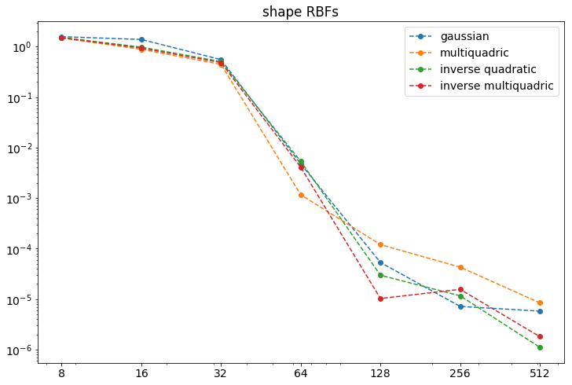
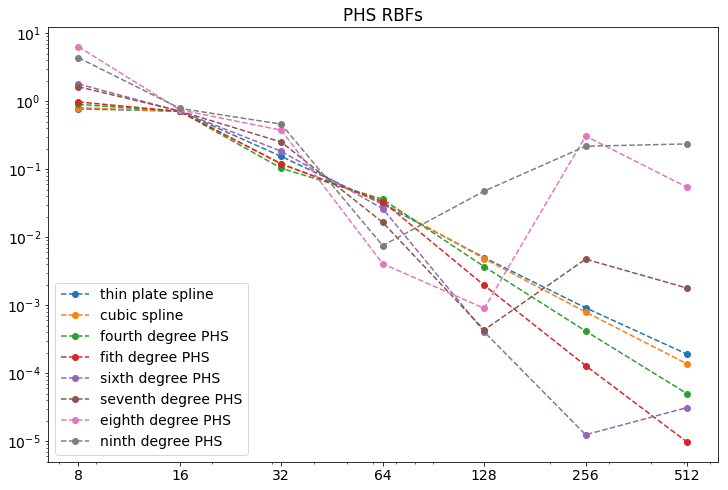
Local Interpolation
def foo(x):
#return np.sin(2*np.pi*x)
return np.sin(np.exp(3*x))
a, b = -1, 1
xs = np.linspace(a, b, 10**3)
plt.figure(figsize=(12,8))
plt.plot(xs, foo(xs))
plt.show()
n, k = 15, 5
m = n*10
rbf_label = 'multiquadric'
eps = 2
#################################################
rbf_obj = rbf_dict[rbf_label]
rbf = rbf_obj['rbf']
xs = np.linspace(a,b,n)
zs = np.linspace(a,b,m)
u_true = foo(zs)
u = np.zeros(len(zs))
all_weights = np.zeros((n,k))
stencils = np.zeros((n,k))
for i in range(k//2+1):
stencils[i] = xs[:k]
for i in range(k//2+1, n -k//2):
stencils[i] = xs[i-(k//2):i+(k//2+1)]
for i in range(n -k//2, n):
stencils[i] = xs[-k:]
for i, z in enumerate(zs):
center = np.argmin(np.abs(xs-z))
stencil = stencils[center]
fs = foo(stencil)
dist_mat = np.abs(np.subtract.outer(stencil,stencil))
A = rbf(dist_mat, eps)
cs = la.solve(A, fs)
u[i] = np.dot(rbf(np.abs(stencil-z),eps), cs)plt.figure(figsize=(12,8))
plt.plot(xs, foo(xs), 'bo')
plt.plot(zs, u_true, 'b-')
plt.plot(zs, u, 'r--')
plt.show()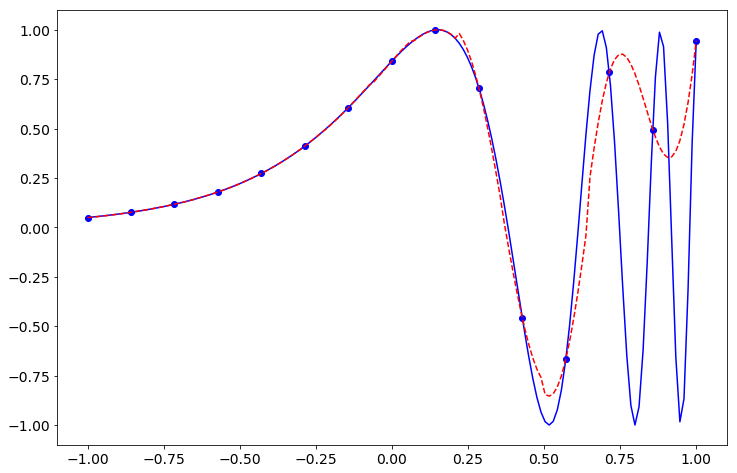
n, k = 100, 21
m = n*10
rbf_label = 'multiquadric'
#eps = 5
#################################################
# make k odd for simplicity
if k%2==0:
k += 1
rbf_obj = rbf_dict[rbf_label]
rbf = rbf_obj['rbf']
xs = np.linspace(a,b,n)
fs = foo(xs)
zs = np.linspace(a,b,m)
u_true = foo(zs)
us = np.zeros(len(zs))
full_dist_mat = np.abs(np.subtract.outer(zs,xs))
closest_ids = np.argmin(full_dist_mat, axis=1)
# in a zoop build surface around each sample point
for i in range(len(xs)):
c = xs[i]
close_to_c_ids = closest_ids == i
zs_local = zs[close_to_c_ids]
x_ids = get_closest_indices(i, len(xs), k)
xs_local = xs[x_ids]
fs_local = fs[x_ids]
dist_mat = np.abs(np.subtract.outer(xs_local,xs_local))
eps = optimize_eps(rbf, dist_mat)
A = rbf(dist_mat, eps)
cs = la.solve(A, fs_local)
dist_mat = np.abs(np.subtract.outer(zs_local,xs_local))
A = rbf(dist_mat, eps)
us_local = A @ cs
us[close_to_c_ids] = us_local
plt.figure(figsize=(12,8))
plt.plot(xs, fs, 'bo')
plt.plot(zs, u_true, 'b-')
plt.plot(zs, us, 'r--')
plt.show()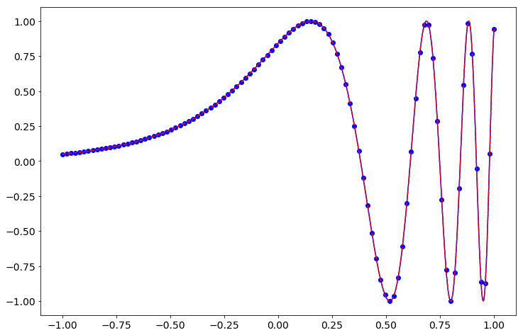
k = 39
ns = [40*2**i for i in range(6)]
print(ns)
shape_errors = [[] for label in shape_labels]
phs_errors = [[] for label in phs_labels]
for n in ns:
print('calculating for n=%d' % n)
xs = np.linspace(a, b, n)
zs = np.linspace(a, b, n*3)
fs = foo(xs)
u_true = foo(zs)
for i, label in enumerate(shape_labels):
rbf_obj = rbf_dict[label]
rbf = rbf_obj['rbf']
us = rbf_interp_local_1D(xs, fs, zs, rbf, stencil_size=k, optimize_shape=True)
err = la.norm(us-u_true)/la.norm(u_true)
shape_errors[i].append(err)
for i, label in enumerate(phs_labels):
rbf_obj = rbf_dict[label]
rbf = rbf_obj['rbf']
us = rbf_interp_local_1D(xs, fs, zs, rbf, stencil_size=k, optimize_shape=False)
err = la.norm(us-u_true)/la.norm(u_true)
phs_errors[i].append(err)[40, 80, 160, 320, 640, 1280]
calculating for n=40
calculating for n=80
calculating for n=160
calculating for n=320
calculating for n=640
calculating for n=1280plt.figure(figsize=(12,8))
legend = []
for err, label in zip(shape_errors, shape_labels):
plt.loglog(ns, err, 'o--')
legend.append(label)
plt.legend(legend)
plt.xticks(ns, ns)
plt.title('shape RBFs')
plt.show()
plt.figure(figsize=(12,8))
legend = []
for err, label in zip(phs_errors, phs_labels):
plt.loglog(ns, err, 'o--')
legend.append(label)
plt.legend(legend)
plt.xticks(ns, ns)
plt.title('PHS RBFs')
plt.show()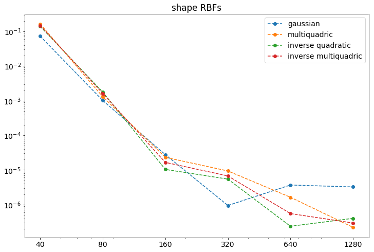
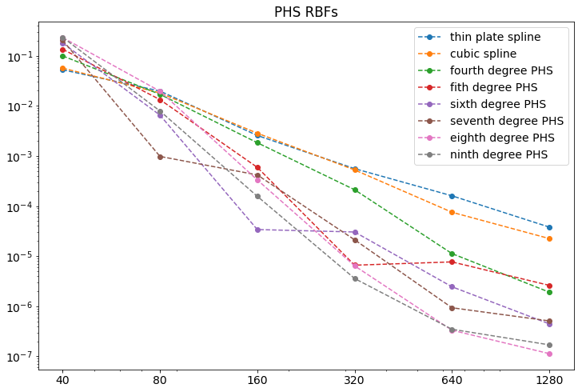
def rbf_interp_local_1D(xs, fs, zs, rbf, stencil_size=10, eps=1, optimize_shape=False, target_cond=10**12, return_cond=False):
k = stencil_size
us = np.zeros(len(zs))
full_dist_mat = np.abs(np.subtract.outer(zs,xs))
closest_ids = np.argmin(full_dist_mat, axis=1)
# in a zoop build surface around each sample point
for i in range(len(xs)):
c = xs[i]
close_to_c_ids = closest_ids == i
zs_local = zs[close_to_c_ids]
x_ids = get_closest_indices(i, len(xs), k)
xs_local = xs[x_ids]
fs_local = fs[x_ids]
dist_mat = np.abs(np.subtract.outer(xs_local,xs_local))
if optimize_shape:
eps = optimize_eps(rbf, dist_mat)
A = rbf(dist_mat, eps)
cs = la.solve(A, fs_local)
dist_mat = np.abs(np.subtract.outer(zs_local,xs_local))
A = rbf(dist_mat, eps)
us_local = A @ cs
us[close_to_c_ids] = us_local
return usus = rbf_interp_local_1D(xs, fs, zs, rbf, stencil_size=k, optimize_shape=True)--------------------------------------------------------------------------- ValueError Traceback (most recent call last) <ipython-input-85-1568448345ad> in <module>() ----> 1 us = rbf_interp_local_1D(xs, fs, zs, rbf, stencil_size=k, optimize_shape=True) <ipython-input-84-02aba9f9ef0d> in rbf_interp_local_1D(xs, fs, zs, rbf, stencil_size, eps, optimize_shape, target_cond, return_cond) 14 dist_mat = np.abs(np.subtract.outer(xs_local,xs_local)) 15 if optimize_shape: ---> 16 eps = optimize_eps(rbf, dist_mat) 17 A = rbf(dist_mat, eps) 18 cs = la.solve(A, fs_local) <ipython-input-82-bb645e3dfd53> in optimize_eps(rbf, dist_mat, P, target_cond) 20 root = brentq(functional, 21 MEPS, eps_guess*10, ---> 22 args=(rbf, dist_mat, P, target_cond)) 23 #except ValueError: 24 # root = eps_guess /usr/local/lib/python3.6/dist-packages/scipy/optimize/zeros.py in brentq(f, a, b, args, xtol, rtol, maxiter, full_output, disp) 508 if rtol < _rtol: 509 raise ValueError("rtol too small (%g < %g)" % (rtol, _rtol)) --> 510 r = _zeros._brentq(f,a,b,xtol,rtol,maxiter,args,full_output,disp) 511 return results_c(full_output, r) 512 ValueError: f(a) and f(b) must have different signs
def functional(eps, rbf, dist_mat, P, target_cond):
#print('test2')
A = rbf(dist_mat, eps)
if P is None:
AP = A
else:
k = len(P)
AP = np.block([[A, P],[P.T, np.zeros((k,k))]])
#print(np.log( la.cond(AP) / target_cond))
return np.log( la.cond(AP) / target_cond)
def optimize_eps(rbf, dist_mat, P=None, target_cond=10**12):
#f = open('test.pickle', 'wb')
#pickle.dump(dist_mat, f)
#f.close()
n = dist_mat.shape[0]
eps_guess = 1/np.min(dist_mat+np.diag([np.max(dist_mat)]*n))
#eps_guess = 10**5
#try:
root = brentq(functional,
MEPS, eps_guess*10,
args=(rbf, dist_mat, P, target_cond))
#except ValueError:
# root = eps_guess
return rootdist_mat.shape(6, 21)import picklef = open('test.pickle', 'rb')
dist_mat = pickle.load(f)
f.close()A = rbf(dist_mat, 10**-10)
print(la.cond(A))10788.152790574224rbf<function rbf.rbf>xs.shape(39, 39)label'thin plate spline'from sympy import *r, eps = symbols('r eps')
phi = r**9expr = phi
for name in ['zeta', 'chi', 'beta']:
expr = (diff(expr, r)/r).simplify()
expr_str = str(expr).replace('exp','np.exp')
expr_str = expr_str.replace('sqrt', 'np.sqrt')
expr_str = expr_str.replace('log(', 'np.log(MEPS + ')
print('def %s(r, eps):\n\treturn %s' % (name, expr_str))
expr = phi
for name in ['drbf', 'd2rbf']:
expr = diff(expr, r).simplify()
expr_str = str(expr).replace('exp','np.exp')
expr_str = expr_str.replace('sqrt', 'np.sqrt')
expr_str = expr_str.replace('log(', 'np.log(MEPS + ')
print('def %s(r, eps):\n\treturn %s' % (name, expr_str))def zeta(r, eps):
return 9*r**7
def chi(r, eps):
return 63*r**5
def beta(r, eps):
return 315*r**3
def drbf(r, eps):
return 9*r**8
def d2rbf(r, eps):
return 72*r**7expr = diff(phi,r)/rexpr = expr.simplify()expr2*log(r) + 1